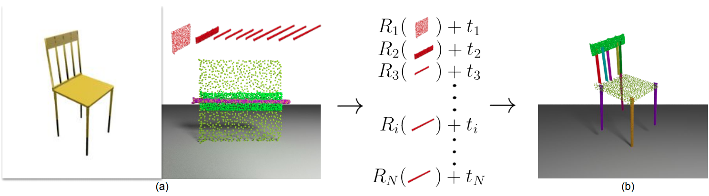

Autonomous assembly is a crucial capability for robots in many applications. For this task, several problems such as obstacle avoidance, motion planning, and actuator control have been extensively studied in robotics. However, when it comes to task specification, the space of possibilities remains underexplored. Towards this end, we introduce a novel problem, single-image-guided 3D part assembly, along with a learningbased solution. We study this problem in the setting of furniture assembly from a given complete set of parts and a single image depicting the entire assembled object. Multiple challenges exist in this setting, including handling ambiguity among parts (e.g., slats in a chair back and leg stretchers) and 3D pose prediction for parts and part subassemblies, whether visible or occluded. We address these issues by proposing a two-module pipeline that leverages strong 2D-3D correspondences and assembly-oriented graph message-passing to infer part relationships. In experiments with a PartNet-based synthetic benchmark, we demonstrate the effectiveness of our framework as compared with three baseline approaches.
Figure 1. Single-Image-Based 3D Part Assembly Task. Given as inputs an image and a set of part point clouds depicted in (a), the task is to predict 6D part poses in camera coordinates that assemble the parts to a 3D shape in the given image as shown in (b). |
Figure 2. Network Architecture. We propose a method that contains two network modules: (a) the part-instance image segmentation module, in which we predict 2D instance-level part masks on the image, and (b) the part pose prediction module, where we combine 2D mask information and 3D geometry feature for each part, push them through two phases of graph convolution, and finally predict 6D part poses. |
Figure 3. Qualitative Results. We show six examples of the three furniture categories, each in two different modalities. The upper and lower rows correspond to modality Level-3 and Level-mixed respectively. |
Figure 4. Quantitative Comparisons to Baseline Methods. Our approach obtains the best performance across three baseline methods, under the part accuracy and assembly chamfer sistance (CD) metrics. |
Figure 5. Failure Cases. We show two examples of failure cases. Case (a), the input image is not geometrically informative. Case (b), the chair has only one type of part geometry. |
This research was supported by a Vannevar Bush Faculty Fellowship, grants from the Samsung GRO program and the Stanford SAIL Toyota Research Center, and gifts from Autodesk and Adobe.